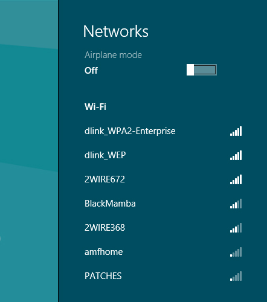

Hello, and thank you very much for bringing Start Menu back to Windows 8 and 8.1.
I'd like to know if it is possible to re-implement the Network icon behavior from Windows 7 in Windows 8 and 8.1.
In Windows 8, when you click the network icon, this panel slides from the right side of the screen:

In Windows 7, you get this nice network manager:
Is it possible to bring it back?
The reason I'm asking for this is because the Windows 8 variant is ugly, takes too much screen space and lacks features that I've often used before. For example, you can't go to connection properties with a right click anymore. Also, when it prompts for username and password and you click outside the sliding panel, instead of losing focus it just slides back completely and cancels the connection altogether. It's very inconvenient, especially if you need to copy-and-paste a password, for example.
Again, thanks a lot for bringing Start Menu back, and I hope you have a look at my suggestion.